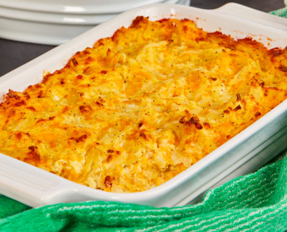

Hashbrown Casserole

Ingredients
- One Package of Shredded or Cubed Hashbrowns
- 3 Cups of shredded cheese (Cheddar or a mexican blend are both good options)
- 3/4 Cup of Chicken Broth
- 1 Lb of ground sausage (Jimmy Dean is an excellent choice)
- Aluminum foil
- 9" x 13" Casserole dish
- 1 tsp olive oil
- Aluminum foil
- Salt and Pepper
Recipe
- Brown the sausage meat and get a nice brown crust on it. The meat should be broken up into small pieces, like ground beef in a taco.
- Use the olive oil to coat the bottom of the casserole dish, to keep the casserole from sticking
- Pour the hashbrowns into the casserole dish
- Add 1 1/2 cups of shredded cheese to the casserole dish
- Once the meat is browned, pour the meat into the casserole dish
- Add salt and pepper to the dish
- Stir the mixture until uniform
- Cover the casserole with the remaining 1 1/2 cups of cheese
- Pour chicken broth evenly over the casserole
- Cover dish with tinfoil and put in a 400 degree oven for 45 minutes